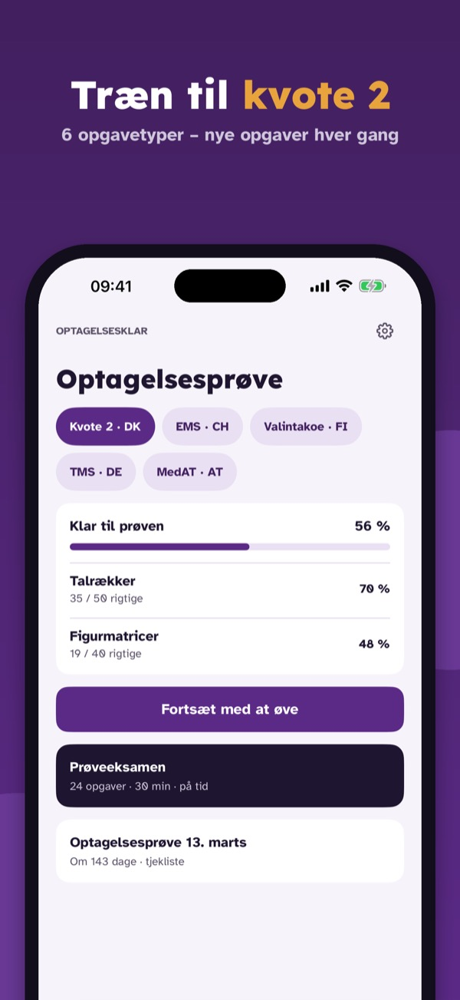
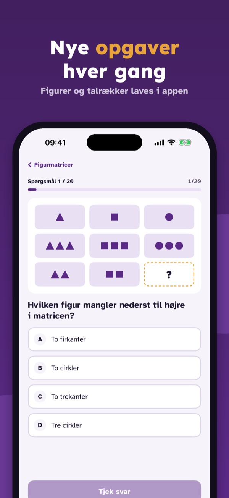
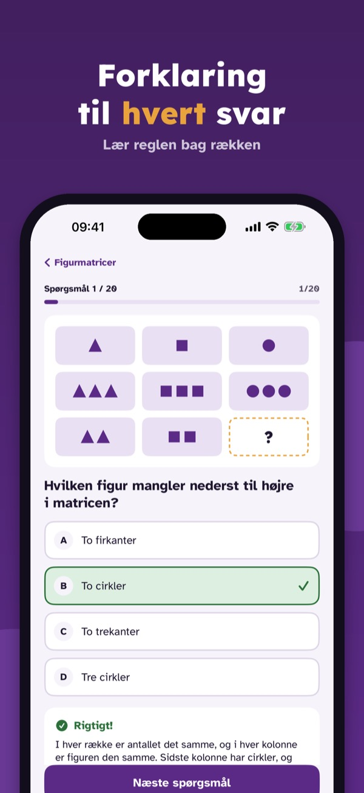
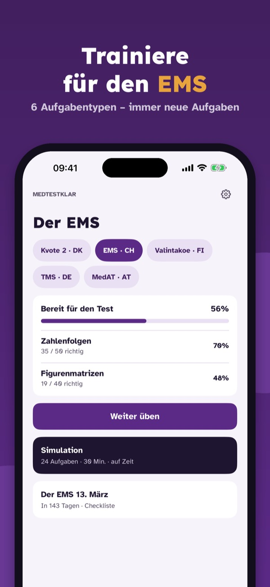
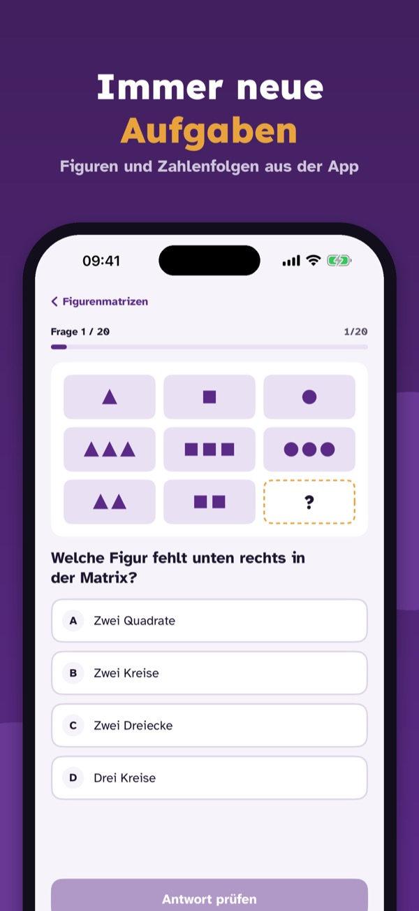
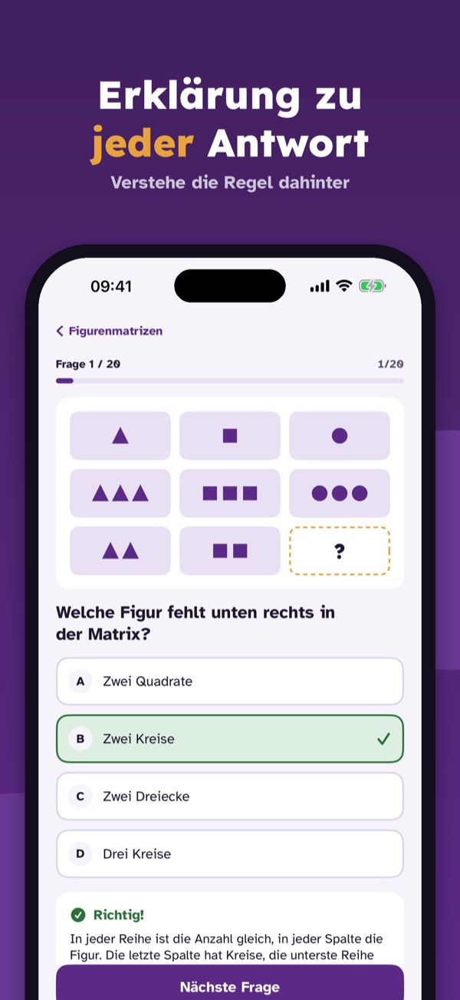
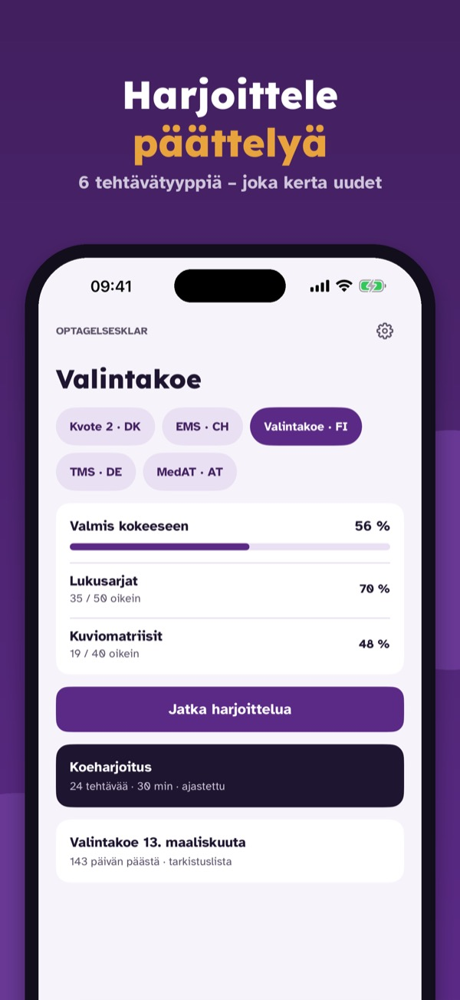
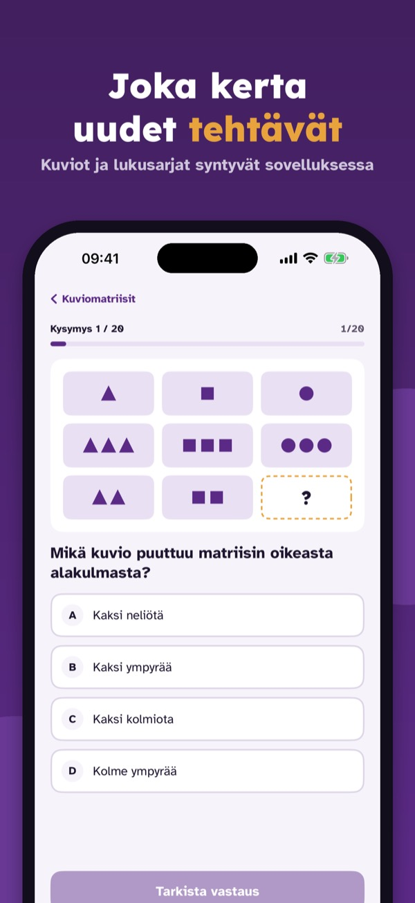
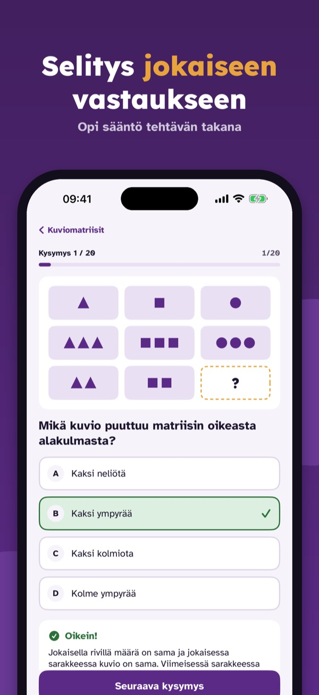

Træn talrækker, figurer, tekst
Træn til optagelsesprøven: nye opgaver med talrækker, figurmatricer og tekst – med forklaring, prøve på tid og uden internet.



Optagelsesklar hjælper dig med at træne til optagelsesprøven til kvote 2 – med nye opgaver hver gang, ikke de samme 50 spørgsmål.
• Spørgsmål pr. emne med forklaring til hvert svar
Uden køb kan du øve 20 opgaver pr. prøve og bruge ordlisten, prøvens dele og prøvedagen. Den fulde version er et engangskøb, der låser alle spørgsmål, prøveeksamener og statistik op. Intet abonnement.
Optagelsesklar er uafhængig og ikke tilknyttet universiteterne, uniTEST eller ITB Consulting. Opgaverne er vores egne.
Terms of Use (EULA): https://www.apple.com/legal/internet-services/itunes/dev/stdeula/
Privacy: https://baytechbv.github.io/privacy/medtest-eu/
Eignungstest Medizin üben
Übe für den Eignungstest Medizin: neue Aufgaben mit Zahlenfolgen, Figurenmatrizen und Texten – mit Erklärung, Simulation auf Zeit und offline.



Medtestklar hilft dir, für den Eignungstest zum Medizinstudium zu trainieren – mit immer neuen Aufgaben statt derselben Fragen.
• Fragen nach Thema mit Erklärung zu jeder Antwort
Ohne Kauf übst du 20 Aufgaben pro Test und nutzt Begriffe, Testaufbau und Testtag. Die Vollversion ist ein Einmalkauf und schaltet alle Fragen, Simulationen und die Statistik frei. Kein Abo.
Medtestklar ist unabhängig und nicht mit Universitäten, swissuniversities oder ITB Consulting verbunden. Die Aufgaben sind unsere eigenen.
Terms of Use (EULA): https://www.apple.com/legal/internet-services/itunes/dev/stdeula/
Privacy: https://baytechbv.github.io/privacy/medtest-eu/
Päättely, lukusarjat, teksti
Harjoittele pääsykokeen päättelytehtäviä: uusia lukusarjoja, kuviomatriiseja ja tekstejä – selitykset, ajastettu koe ja ilman nettiä.



Optagelsesklar auttaa harjoittelemaan pääsykokeiden päättelytehtäviä – joka kerta uusilla tehtävillä.
• Kysymykset aiheittain, selitys jokaiseen vastaukseen
Ilman ostoa voit harjoitella 20 tehtävää koetta kohden ja käyttää sanastoa, kokeen osia ja koepäivää. Täysi versio on kertaosto, joka avaa kaikki kysymykset, koeharjoitukset ja tilastot. Ei tilausta.
Optagelsesklar on itsenäinen eikä liity yliopistoihin tai valintakokeen järjestäjiin. Tehtävät ovat omiamme.
Terms of Use (EULA): https://www.apple.com/legal/internet-services/itunes/dev/stdeula/
Privacy: https://baytechbv.github.io/privacy/medtest-eu/